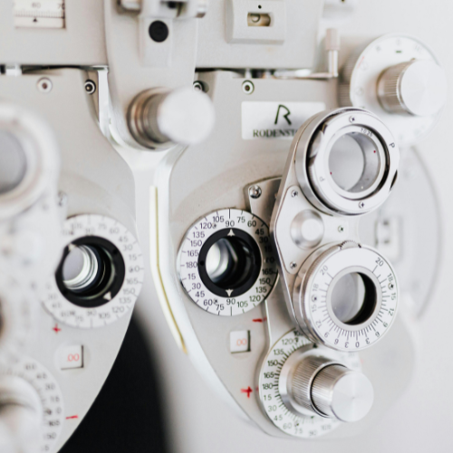
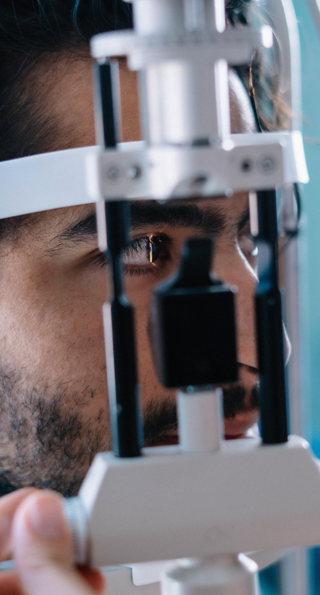
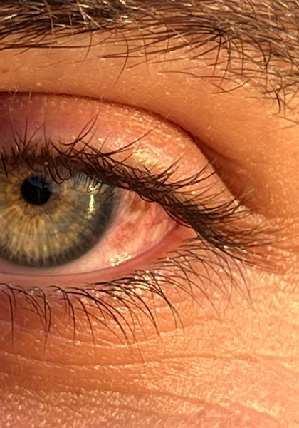
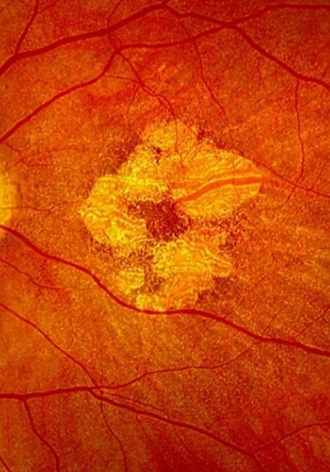
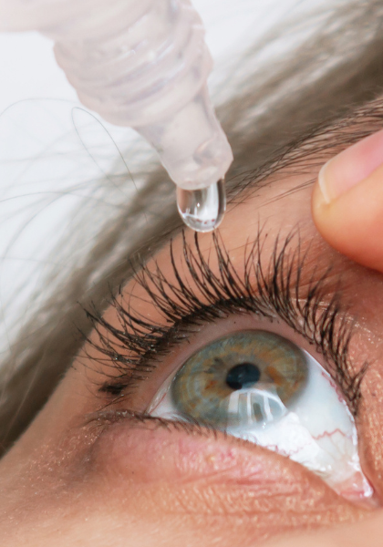
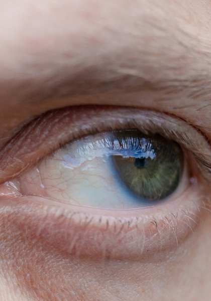

Évaluation visuelle personnalisée, plans de traitement adaptés à votre rythme de vie, chirurgies mini-invasives guidées par l'exercice — pour rendre à votre regard tout son confort et sa netteté.
Chaque œil compte : ici, la science et le soin se rencontrent pour traiter la gêne visuelle avec efficacité. Tout commence par un diagnostic précis, puis un parcours thérapeutique construit avec vous — jusqu'au retour à une vision fonctionnelle et confortable au quotidien.
Prendre rendez-vousDécouvrez les causes les plus fréquentes de gêne visuelle — et comment nous pouvons vous aider.
 Cataracte
Cataracte

Glaucome
DMLA Kératocône
Kératocône

Sécheresse oculaire
StrabismeDeux chirurgiens ophtalmologistes associés, réunis autour d'une même exigence : un diagnostic précis, une chirurgie mini-invasive quand elle est indiquée, et un suivi attentif à chaque étape. Cataracte, glaucome, rétine et chirurgie réfractive — leur pratique conjugue précision technique et écoute du patient.
Découvrir l'équipeExamen complet, mesure de l'acuité visuelle et écoute de votre gêne au quotidien.
Explication claire de la pathologie et des options de traitement adaptées à votre cas.
Techniques mini-invasives, en cabinet ou en clinique partenaire, avec un protocole rigoureux.
Contrôles rapprochés pour accompagner votre récupération jusqu'au retour à une vision confortable.
Les avis de nos patients reflètent non seulement les résultats des traitements, mais aussi l'attention et l'accompagnement du Dr Vasseur et du Dr Rigaud à chaque étape.
Laisser un avis Google"Prise en charge remarquable pour ma cataracte. Le Dr Vasseur a pris le temps de tout expliquer, aucune inquiétude le jour de l'intervention."
"Mon mari est suivi par le Dr Rigaud pour son glaucome, nous n'avons rien à redire. Écoute, précision, professionnalisme."
"Excellent cabinet. Rendez-vous obtenu rapidement, diagnostic clair, et un vrai suivi après l'opération. Je recommande vivement."
"Suivie pour une DMLA depuis deux ans, je me sens vraiment entre de bonnes mains. Le Dr Rigaud prend le temps d'expliquer chaque étape."
"Opéré de la cataracte aux deux yeux à quelques semaines d'intervalle. Tout s'est parfaitement déroulé, équipe très rassurante."
"Ma fille de 9 ans est suivie pour un strabisme, le Dr Rigaud est adorable avec les enfants et très pédagogue avec les parents."
"Cabinet moderne, accueil impeccable et prise en charge rapide de mon kératocône par le Dr Vasseur. Je recommande sans hésiter."